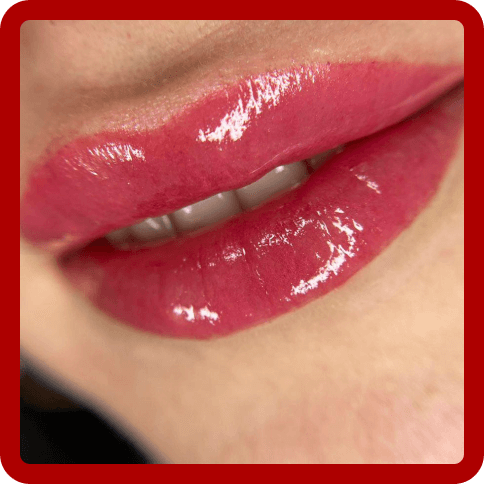

Что такое перманентный макияж?
Перманентный макияж это процедура, которая является идеальным решением для тех женщин, которые ведут активный образ жизни, занимаются плаванием, спортом, кто страдает от аллергии на обычную декоративную косметику. А также для тех, кто в ритмах современной жизни не находит достаточно времени, чтобы нанести макияж. Перманентный макияж поможет Вам подчеркнуть ваши черты лица, сделает их более яркими и выразительными на длительное время. При этом вы всегда будете ухоженной в любой момент время и при любых обстоятельствах.

Часто задаваемые вопросы.
Что будет с бровями, их нужно полностью сбривать и выщипывать?
Сбривать брови ни в коем случае не нужно, и выщипывать перед процедурой не нужно. Мастер подкорректирует и выщипает их только там, где они не совпадают с новой, правильной формой и Вы просто будете поддерживать эту форму в дальнейшем.
Перестают ли расти волосы в зоне татуажа?
Краска вносится в роговой слой кожи, волосяные луковицы находятся намного глубже. По этому волоски не повреждаются и не выпадают.
В какое время года лучше делать татуаж?
Татуаж – это процедура, которую можно делать в любой период года, как Вам самим будет удобнее.
Почему нельзя делать татуаж в период лактации?
Период лактации является относительным противопоказанием для проведения процедуры перманентного макияжа, так как из-за изменения гормонального фона пигмент может плохо взяться.